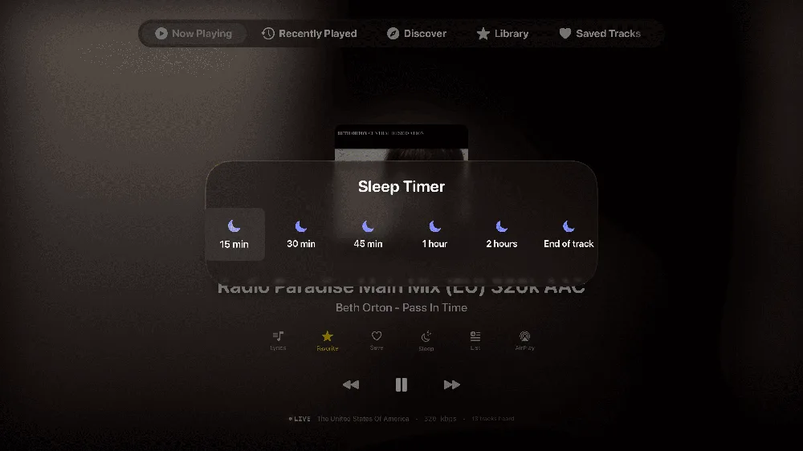
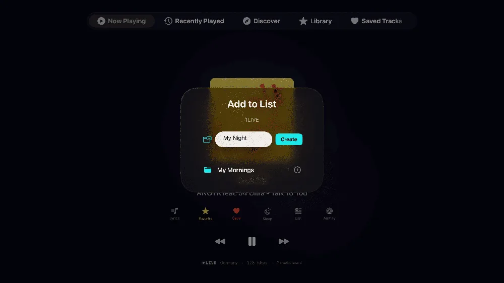
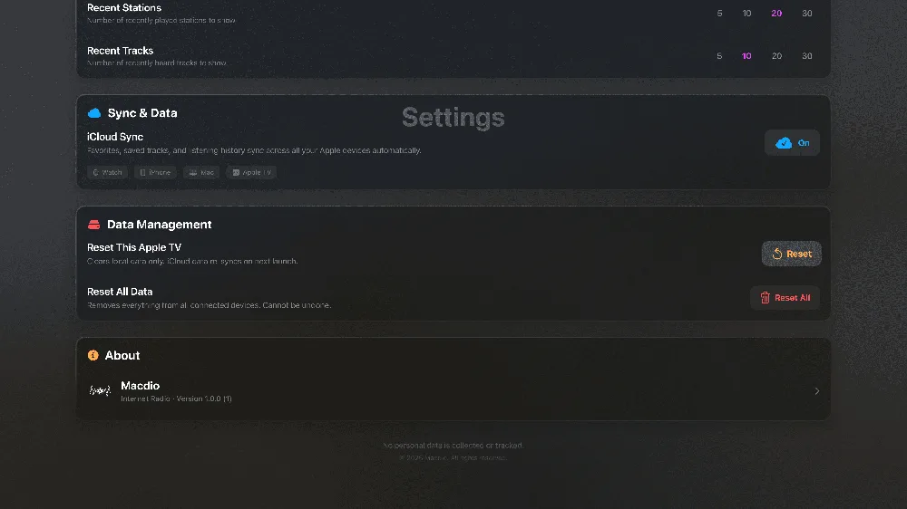

Yes, the Apple TV can play internet radio, and Macdio is a native tvOS app built for it. Install it once, pick a station from 55,000+ worldwide, and the living room speakers do the rest. No subscription, no ads, and nothing to set up on the phone first.
Top Shelf favorites
Your stations sit in the Apple TV Top Shelf with their logos. Two clicks from TV-on to music-playing.
Game controller support
PlayStation and Xbox controllers work out of the box, every key remappable. The Siri Remote can stay on the couch.
Big-screen Now Playing
Album artwork, live song identification and synced lyrics, designed for viewing from across the room.





How to listen to radio on your Apple TV
Install Macdio from the App Store on the Apple TV, or let it appear automatically if you already own it on the iPhone, since one purchase covers every Apple device. Open it and pick a station by country, genre or search, or press play on a favorite that has already synced over iCloud from your other devices. Your most-used stations then sit in the Top Shelf above the app icon, which turns tuning in into two clicks from the home screen.
Radio, made for television
Is there an internet radio app for Apple TV?
Can I use a game controller?
Does it show what song is playing?
Do I need to buy it again for Apple TV?
Does the Apple TV have a built-in radio app?
Which Apple TV models does it work on?
Is there a free radio app for Apple TV?
Ready to tune in?
Get Macdio on the App Store and it appears on your Apple TV. No subscription, no ads, no tracking.